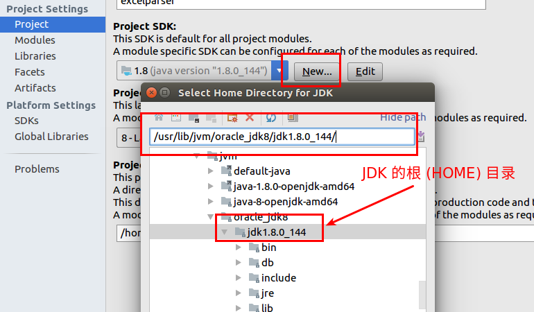
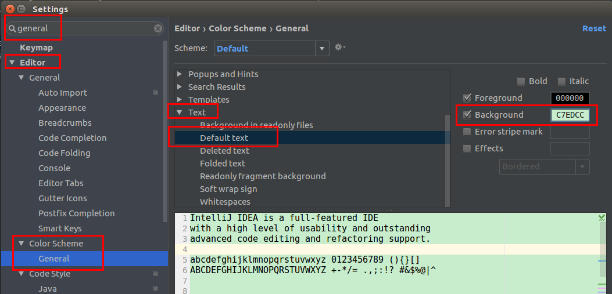
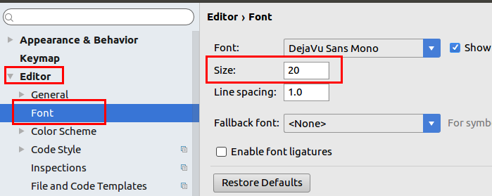
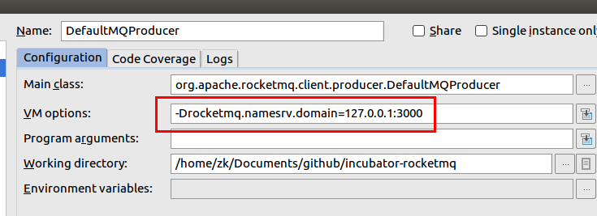
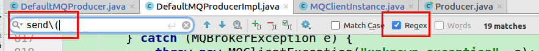
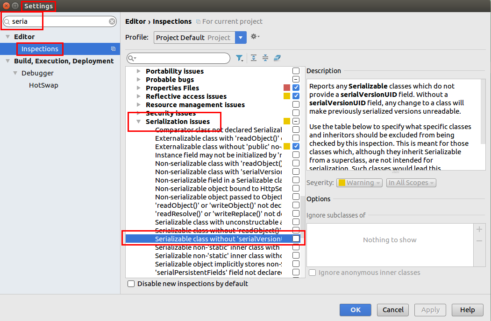
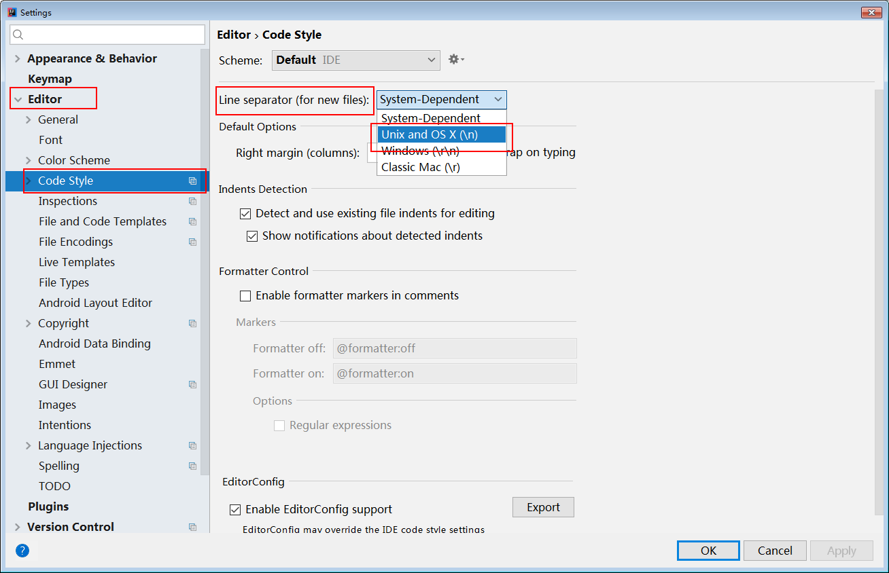
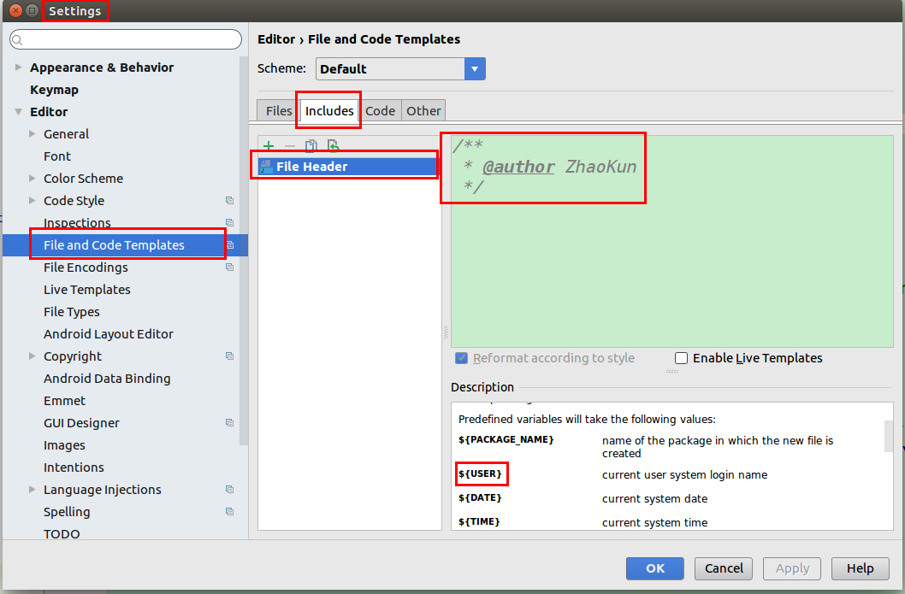
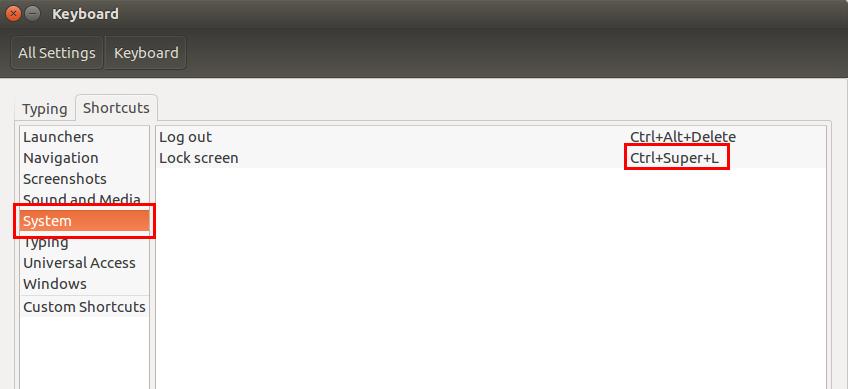
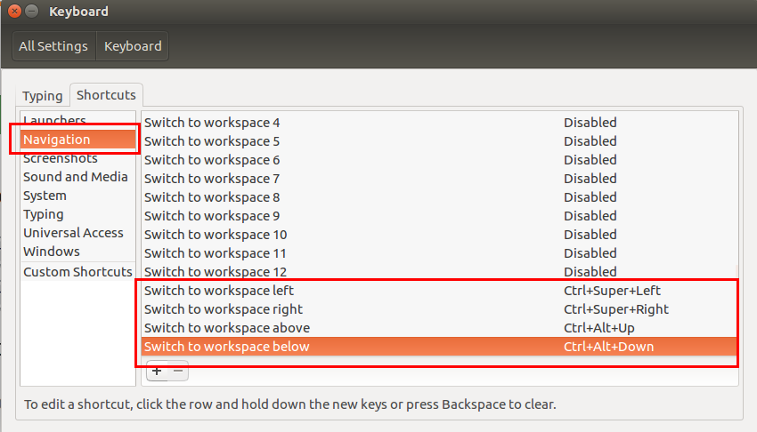

| 快捷键 | 说明 |
|---|---|
Ctrl + X |
剪切一行 |
Ctrl + Y |
删除一行 |
Ctrl + D |
复制一行 |
Ctrl + Alt + O |
优化包的导入 |
Double shift |
查找某个文件 (有时候会无法自动获得焦点) |
Ctrl + N |
查找类 |
Ctrl + Shift + N |
查找文件 |
Alt + ←/→ |
在 Tab 间切换 |
Ctrl + F4 |
关闭 Tab |
Shift + F6 |
重命名 |
Ctrl + Shift + A |
搜索某个命令 |
Alt + Insert |
生成各种方法 |
Ctrl + F2 |
停止 |
Ctrl + F12 |
显示所有方法 |
Ctrl + Q |
显示快捷帮助文档 |



System.getProperty 参数
使用这个接受参数:
|
|
默认按下 Ctrl + F 是含有正则表达式的，所以如果想要搜索 send(Message msg) 这样的字眼，那就得需要将括号进行转义处理:


设置上这个之后，IDEA 还是不会自动添加序列化 ID，但是当你在类上按下 Ctrl + Enter 的时候，它可以提示你添加序列化 ID 了。




Ctrl + [ and Ctrl + ] to navigate to a code block’s start and end.Ctrl + Shift + M to navigate between the start and end of a code block.Function 所在的实现Ctrl + B
删除 .idea 目录结构,然后重新打开这个项目